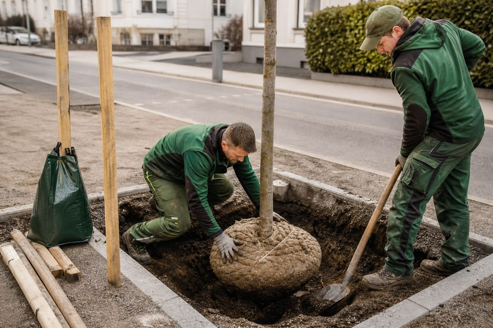

Zukunftsbäume: Welche Arten Hitze, Trockenheit und Frost aushalten
Die GALK-Straßenbaumliste führt 178 geeignete Straßenbaumsorten, die Broschüre von BdB und GALK filtert daraus 65 Zukunftsbäume. Für Betriebe, die Bäume pflanzen und für ihr Anwachsen haften, ist die Auswahl eine Frage des Geldes.

Die Linde vor dem Rathaus, der Ahorn in der Allee, die Rosskastanie am Biergarten – viele der Bäume, die das Bild deutscher Städte prägen, kommen mit dem Klima nicht mehr zurecht. Trockenheit, Strahlung und veränderte Niederschläge setzen ihnen zu, Schädlinge und Pilze kommen dazu. Die Deutsche Gartenamtsleiterkonferenz (GALK) beobachtet deshalb seit Jahrzehnten, welche Arten im Straßenraum funktionieren, und veröffentlicht die Ergebnisse in ihrer Straßenbaumliste.
178 Sorten, 65 Zukunftsbäume
Die Liste weist aktuell 178 Baumsorten als taugliche Straßenbäume aus, mit Bewertungen zu Standort, Kronenform, Salztoleranz und Erfahrungen aus den Städten. Der Bund deutscher Baumschulen hat gemeinsam mit der GALK daraus die Broschüre „Zukunftsbäume für die Stadt” entwickelt: 65 Arten und Sorten, die als besonders geeignet für die Stadt der Zukunft gelten. Die Kriterien sind eindeutig: hohe Trockenstresstoleranz und Hitzeresistenz, gleichzeitig Frosthärte und eine geringe Anfälligkeit für Schädlinge und Krankheiten.
Zu den Arten, die in den Listen regelmäßig gut abschneiden, gehören Hopfenbuche, Zerreiche, Silberlinde, Amberbaum, Baumhasel, Blumenesche und mehrere Ahorn- und Eichenarten aus trockeneren Herkünften. Welche Sorte an welchen Standort gehört, entscheidet die Liste – nicht die Verfügbarkeit in der nächsten Baumschule.
Warum das Betriebe betrifft
Wer einen Baum pflanzt, haftet in der Regel für sein Anwachsen – die Fertigstellungs- und Entwicklungspflege läuft über Jahre. Eine ungeeignete Art kostet den Betrieb Nachpflanzung, Pflege und Ruf. Drei Konsequenzen:
- Die Liste ist ein Argument. Wenn der Auftraggeber eine Art wünscht, die für den Standort ungeeignet ist, hilft der Verweis auf GALK und BdB. Wer schriftlich auf die Listen hinweist, ist im Streitfall besser gestellt.
- Der Standort ist mehr als die Art. Zukunftsbäume brauchen Zukunfts-Standorte: ausreichend Wurzelraum, geeignetes Substrat, Wasserzufuhr in den ersten Jahren. Eine Baumrigole verbessert die Bilanz mehr als die beste Sorte im schlechten Boden.
- Früh bestellen. Die gefragten Zukunftsarten sind in großen Stückzahlen und Sortierungen knapp. Wer für Projekte 2027 pflanzt, sollte jetzt mit Baumschulen sprechen.
Kommentare
Noch keine Kommentare. Schreiben Sie den ersten.
Mehr aus Bauen & Pflanzen
Zum Ressort
Über 80 Landkreise verbieten die Wasserentnahme – was das für Pflanzungen und Pflege bedeutet
Der Sommer 2026 hat Böden und Flüsse ausgetrocknet. Landkreise von Baden-Württemberg bis Brandenburg untersagen die Entnahme aus Bächen und Flüssen, teils bis Oktober. Für GaLaBau-Betriebe wird Bewässerung damit zur Planungs- und Haftungsfrage.

Anwachsen sichern: Wie junge Bäume den ersten Sommer überstehen
Die Pflanzung ist abgenommen, der Sommer kommt, und der Betrieb haftet für das Anwachsen. Was Fertigstellungs- und Entwicklungspflege verlangen, wie viel Wasser ein Jungbaum wirklich braucht und warum der Gießrand wichtiger ist als der Schlauch.

Schwammstadt: Vom Fachbegriff zum Auftrag
Regenwasser speichern statt ableiten – das Prinzip ist alt, die Nachfrage neu. Kommunen planen Regengärten, Baumrigolen und Versickerungsmulden, Landesgartenschauen zeigen sie, Förderprogramme bezahlen sie. Was GaLaBau-Betriebe wissen müssen.